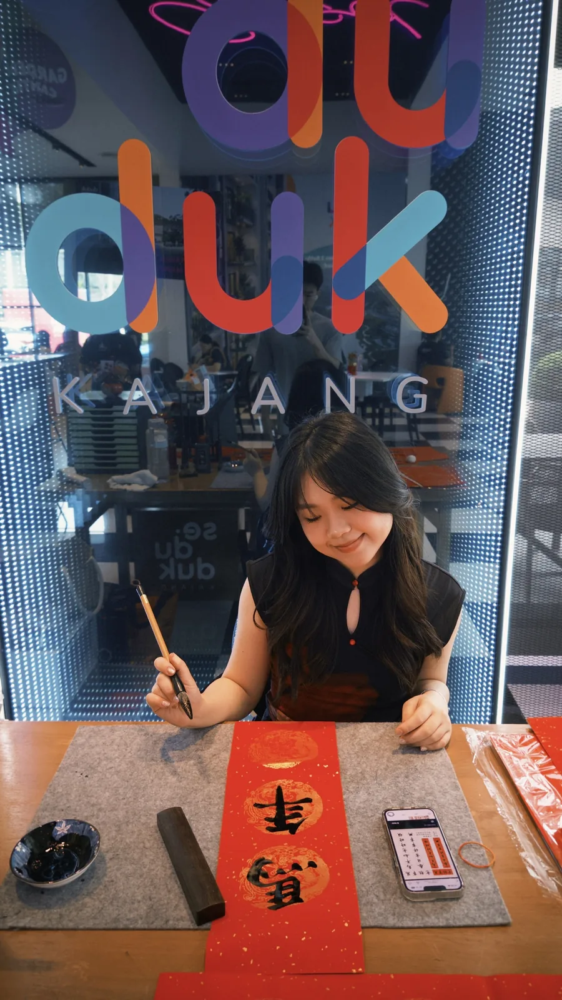

YY Ink brand operations
Develop handmade calligraphy products, organize booth presentation, maintain Instagram and Xiaohongshu brand activity, and handle direct customer conversations.
I combine hands-on brand building with structured operations: producing and presenting YY Ink Studio work, editing independent badminton content, delivering live calligraphy activations, and supporting fragrance customers. Procurement experience strengthens how I plan, coordinate, and document each project.

Each case connects responsibilities to supplied evidence. Post-level metrics remain attached to the exact content that produced them, and independent fan work is separated from client or commissioned activity.
I am an International Business graduate from HELP University with a CGPA of 3.43 and experience across creative brand operations, live calligraphy, fragrance promotion, procurement, logistics, and data management.
Through YY Ink Studio, I manage the practical work behind a small creative brand: making calligraphy products, preparing booth presentation, maintaining social-platform activity, speaking with customers, and delivering commissioned activations. My procurement role at China Communications Construction (ECRL) strengthened my approach to schedules, supplier coordination, contracts, tenders, and documented delivery.
Develop handmade calligraphy products, organize booth presentation, maintain Instagram and Xiaohongshu brand activity, and handle direct customer conversations.
Produce independent badminton fan edits for Douyin and report post-level performance without presenting one video's results as an account-wide average.
Prepare materials, demonstrate calligraphy, guide participants through the activity, and keep the session organized during live events.
Explain fragrance profiles, recommend options by preference and occasion, support booth promotion, and maintain clear product presentation.
Open each case to review the role, supporting images, verified outcomes, and the boundaries applied where evidence is incomplete.
Creative execution is supported by customer-facing retail experience and structured procurement work involving logistics, suppliers, contracts, tenders, and daily coordination.
May 2025 to March 2026. Coordinated project-import deliveries, maintained daily tracking and exception follow-up, reviewed logistics charges, supported supplier contracts, and prepared tender documentation.
Developed practical experience in product presentation, booth operations, customer conversations, live demonstrations, workshop guidance, and preference-based fragrance recommendations.
In 2024, I worked part-time promoter roles with Brēth & Co. and The Perfume Hub. I explained fragrance profiles, matched recommendations to customer preferences and occasions, supported product demonstrations and promotions, and maintained booth presentation. No sales total or conversion rate is claimed because none was supplied.
The Brēth photographs document an outdoor product booth, product presentation, and Sam working directly with customers. The Perfume Hub role is supported by the source resume, but no separate image was supplied.
The downloadable resume uses the same verified employment, education, language, and project evidence shown here.
Independent fan content: The badminton posts are personal fan projects, not official client work.
Analytics: 362,500 plays and 28,300 likes belong to the 2022-08-05 top video, not an account-wide average.
Missing images: EcoWorld and Xiaohongshu are supported by the source resume, but no screenshots were supplied. The unidentified workshop photo is not assigned to either client.